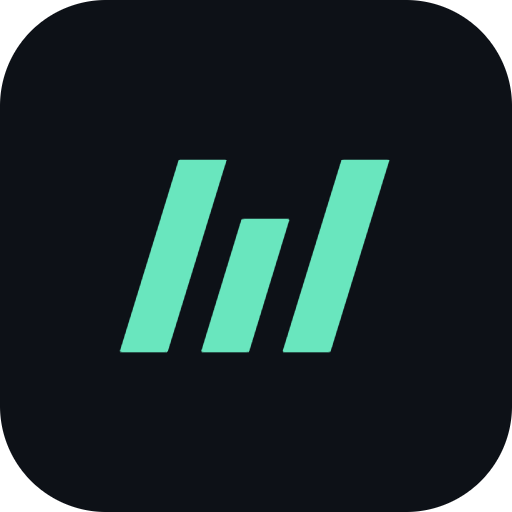
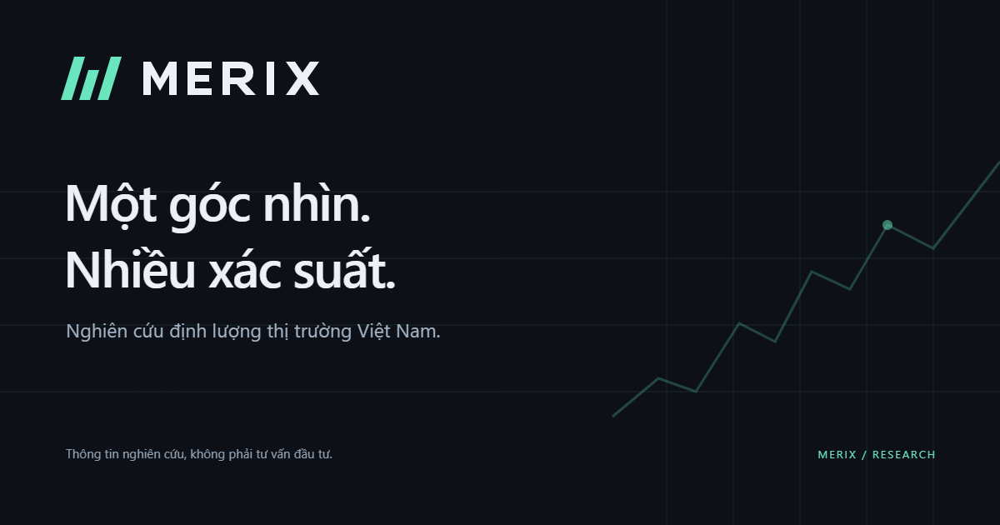

MERIX / QUANTITATIVE RESEARCH
Một dấu hiệu.
Một hệ thống nhận diện.
Nhận ra MERIX ở mọi kích thước.
Một biểu tượng dùng xuyên suốt tab trình duyệt, màn hình ứng dụng và ảnh đại diện. Phiên bản maskable có vùng an toàn để hệ điều hành cắt thành các hình dạng khác nhau.

App icon · 192 / 512 / 1024 px
Phiên bản nền sáng · 512 px
Favicon · SVG / ICO / PNG
Ba nét. Một nhịp chuyển động.
Hai nét dài và một nét ngắn tạo nhịp dữ liệu, gợi chữ M theo ngôn ngữ trừu tượng. Các nét song song giữ cùng độ nghiêng, dễ nhận diện ngay cả khi thu nhỏ.
Màu sắc có chủ đích.
Mint là màu nhận diện trên nền tối. Với nền trắng, chuyển sang deep green để biểu tượng giữ độ tương phản.
Signal mint#69E6BE
Graphite#0D1117
Cloud white#EDF1F6
Deep green#087B61
Ink#182E37
Một liên kết. Đúng tinh thần MERIX.
Ảnh chia sẻ 1200 × 630 px cho Open Graph. Biểu đồ là hình trang trí nhận diện, không biểu diễn dữ liệu hay kết quả đầu tư.



Khoảng trống & kích thước
Giữ khoảng trống quanh logo ít nhất bằng độ rộng một nét của biểu tượng. Logo ngang nên rộng từ 120 px; dưới mức này, dùng biểu tượng riêng. Dùng favicon chuyên dụng ở 16–48 px.
Giữ nguyên cấu trúc
Giữ đúng tỷ lệ, hướng nghiêng và khoảng cách. Dùng SVG cho giao diện hoặc in ấn; PNG cho nền tảng chỉ nhận ảnh. Logo và wordmark đã chuyển thành path, không cần cài font.